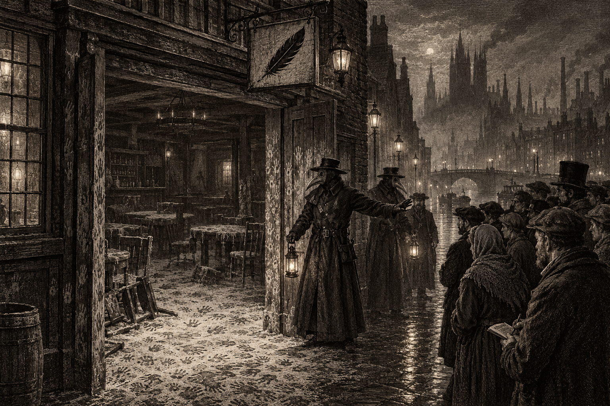
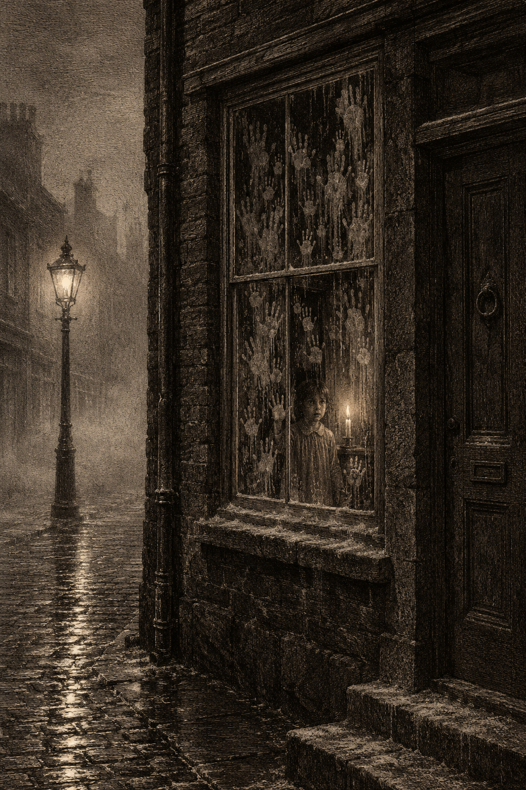

What remains of the Tarred Feather, Crow’s Foot, on the morning after. The walls stand. Nothing within them does.
The Tarred Feather was full on the night of the 22nd. It was one of the open evenings its proprietors hold for the neighborhood — cheap ale, loud company, and work for those who come asking. By the second bell, the house was dark. By dawn, it was empty in a way no building in this city has been emptied in living memory.
There was no fire. Neighbors heard no blast. What they describe instead is a silence — the music and the shouting stopping all at once, “like a hand over a mouth,” said a woman who lives across the lane — followed by a dry wind that came out of the windows and doors and rattled the shutters of the street. When the first of the bolder neighbors went to look, they found the lamps out and the rooms full of a fine grey dust, drifted ankle-deep against the walls.
Of the patrons and staff, there is no count. The Bluecoats will say only that “a number” are dead or missing; the neighborhood says dozens. No bodies have been carried out that anyone can name. Several witnesses describe the dust as marked all over with handprints — on the bar, on the walls, on the insides of the windows — though every soul who might have made them is gone.
One detail, offered by two separate regulars who left early: a handful of strangers had been in the house that evening, unknown to the usual crowd, and were gone well before the silence fell.
The Spirit Wardens sealed the street before noon. This paper was able to speak briefly with Wren, an investigator attached to the Wardens, at the cordon. Asked whether the Wardens knew who or what was responsible, she was unusually frank. “We have our suspicions of who it was,” she said. “But some things do not line up with their normal… behaviors.” She would not say whose behaviors she meant.
Your correspondent then asked whether the Wardens’ presence in Crow’s Foot had anything to do with their unexplained attendance at a Silkshore pipe-house only weeks ago — reported in these pages — and the stripped body of the man found there. “No comment,” said Wren, and the cordon closed.
This paper will not pretend to know what it does not. But we note the following. In Silkshore, a scuffle in the night, a dead man’s clothes gone, and the Wardens arriving in force. In Crow’s Foot, a house known to do business with the district’s rougher trades, strangers who left early, and the Wardens again. Two incidents. The same uninvited guests. If the parties to the Silkshore bungle and the trouble at the Tarred Feather are not one and the same, they keep remarkably similar company.
A Note on Things That Do Not Line Up
An officer of the Spirit Wardens has told this paper, on the record, that something in this city has behaved out of character, and that the Wardens believe they know what it is. The families of Crow’s Foot are entitled to the rest of that sentence.
We will keep asking.

“Hands in the dust.” An old warning, still told in the Docks and Crow’s Foot.
Since the Tarred Feather, the grandmothers of Crow’s Foot have been saying an old rhyme again. Most of them learned it as children. None of them can say who taught it first.
Hands in the dust and dust on the door,
Don’t ask her in unless you name what for.
Ask her in idle and leave her no due,
She’ll make her own bargain — and the bargain is you.
The custom that goes with it is older still: when a knock comes at night, you do not say “come in.” You say “what for?” — and you wait for an answer.
Who “she” is, the rhyme does not say. This correspondent asked a dozen households. Most laughed. Three shut the door.